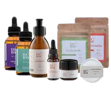

Importância de cuidar da pele
Cuidar da pele é essencial para mantê-la saudável e bonita. Uma rotina de limpeza, hidratação e proteção ajuda a melhorar a textura, reduzir manchas e prevenir o envelhecimento precoce.
Pele Oleosa
A oleosidade costuma surgir na adolescência e está ligada aos hormônios e à glândula sebácea. O cuidado certo ajuda a equilibrar sem agredir a pele.
Rotina ideal:
- Use sabonete específico.
- Prefira um tônico suave.
- Evite lavar mais que 3 vezes ao dia.
- Faça esfoliação até 2x por semana.
- Não use água quente.
Pele Mista
Oleosa na zona T e seca nas laterais, a pele mista exige equilíbrio entre hidratação e controle de oleosidade.
Rotina ideal:
- Beba bastante água.
- Consuma alimentos ricos em vitaminas.
- Evite produtos abrasivos.
- Consulte um dermatologista.
Pele Seca
Com pouca hidratação natural, precisa de cuidados especiais para evitar descamação e repuxamento.
Rotina ideal:
- Hidrate constantemente.
- Use ativos hidratantes.
- Beba água regularmente.
- Use protetor solar.
- Evite água quente.
Pele Sensível
Mais propensa à irritação e vermelhidão, a pele sensível exige produtos suaves e hidratação contínua.
Rotina ideal:
- Rotina suave e delicada.
- Use hidratante com frequência.
- Mantenha boa alimentação.
- Use filtro solar diário.
- Evite produtos irritantes.